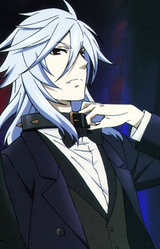

Takafumi Yamaguchi is a Japanese voice actor.
- Gender: Male
- Birthday: June 13, 1977
| |
Takafumi Yamaguchi is a Japanese voice actor.
|
|
|---|
|  | Pluto |
|
Pluto is a large dog that can shape-shift into a human. He only listens to Sebastian's order and gets jealous when Sebastian give him less attention than a cat. |